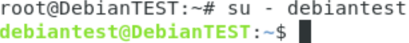
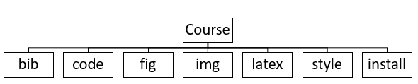

Overview The Generating Documents (Basic) Using Markdown User Manual outlines the objectives, requirements, and needs to be addressed when training users on how to generate a PDF, HTML, or ODT document using markdown file. The plan presents the activities needed to support file development.
Markdown is a fast and easy way to take notes, create content for a website, and produce print-ready documents. It’s a lightweight markup language with plain text formatting syntax. Markdown is designed to be converted to many different output formats such as PDF, Word, ODT, HTML, and many more. It is both portable and platform independent, more intuitive to read and write, and can be used for websites, documents, notes, books, etc., but is often used to format readme files and in online discussion forums.
Markdown text is written and stored in plaintext file with a markdown extension (e.g. .md). Using a separate markdown application capable of processing markdown (we will be using Pandoc), it takes the markdown formatted text and converts it to HTML. The HTML file can then be viewable in a web browser or then converted to another file format, like PDF.
Helpful Skills:
For a fully functioning environment and step by step guide on installation instructions follow the instructions below:
NOTE: All the following steps must be installed on a Linux operating system.
apt update then type: apt install gitNOTE: Upon opening your terminal, you may see username@hostname:~$. You want your terminal to run as root@hostname. To do this, upon opening your terminal, type: su --
Then enter your password. You should see something like this:

Install Make In your terminal, type (as root): apt-get update then type: apt-get install build-essential
Install LaTex
Idpkg -i pandoc-2.9.1.1-1-amd64.debcabal update
apt-get install haskell-platformcabal updateNOTE: To run terminal as a normal user, type: su - username where “username” is your username. You should see something like this:

cabal install pandoc-typescabal configurecabal installInstall pandoc-numbering filter Type (as normal user): pip3 install pandoc-numbering
Install latexmk fully automated latex document generation
NOTE: You may need to expose hidden files while in “Home”. To do this press Ctrl + H.
Install pdf2svg In your terminal type (as root): apt-get install pdf2svg
Install librsvg2-bin In your terminal type (as root): apt-get install librsvg2-bin
Install texlive-xetex In your terminal type (as root): apt-get install texlive-xetex
Install linuxlibertine font and freefont
apt-get install fonts-linuxlibertineapt-get install fonts-freefont-ttfClone this basic folder structure (as a normal user) Type: git clone https://github.com/poonamveeral/GeneralRepo
Testing Pandoc
pandoc test_pandoc.md -o test_pandoc.htmlpandoc test_pandoc-numbering.md --filter pandoc-numbering -o test_pandoc-numbering.html
export PATH=$PATH:/home/username/.local/binpandoc --filter pandoc-citeproc test_pandoc-citeproc.md -o test_pandoc-citeproc.html
pandoc --filter pandoc-include-code -o test_pandoc-include-code.pdf test_pandoc-include-code.mdIf you’re receiving “Could not find executable pandoc-include-code” * Go to the root folder, and open the “.bashrc” file with a text editor * Add the line below to the bottom of the file and click “save” to save the file:
export PATH=$PATH:/home/username/.cabal/bin
Follow these steps to learn how to create a simple markdown document utilizing bibliographies, images/figures, and code blocks.
To start off, you’re going to need a folder structure set up like this:

If you completed number 13 from 2.2 Software Requirements skip step 2. If not, continue on.
You want each folder to contain:
.
├── install/ -- How to install requirements to compile the document.
│ ├── .md files -- To test Pandoc
├── bib/ -- References (including reference to the document).
│ ├── .bib files -- To store citations.
├── code/ -- Source code included in the document.
│ ├── code files -- (E.g. .java, .xml, .sql)
├── fig/ -- Source code for various figures used in the document.
├── img/ -- Various image files itegrated in the document.
├── latex/ -- Latex configuration file.
├── style/ -- CSS style used for the web page.
├── Makefile -- Directives to generate example.md document.
├── README.md -- The present file.
└── example.md -- Sample file to test.An example of a basic template of a markdown file can be found at “example.md” in the generic repo from step 13 from above.
Follow these steps to learn how to compile and convert a markdown file to PDF, ODT, and HTML. Other possible conversion formats can be found here: https://pandoc.org/
Open up a terminal, inside of it, change your directory to where your markdown file is located. In this example, navigate to your “Course” folder. To do this, simply type: cd Course where “Course” is the name of your Course folder.
Next, type: make fig “make fig” compiles all the latex code in order to produce the figures from the figures folder.
Then type: make fig_svg “make fig_svg” compiles all the latex code in order to produce the figures from the figures folder.
To produce a PDF document common format is:
pandoc <filters> inputfile.md -o outputfile.ext
or
pandoc <filters> -o outputfile.ext inputfile.md
For our example, in your terminal, while in the directory of where your markdown file is located, which should be your “Course” folder, type:
make pdf
or
pandoc --toc --filter pandoc-numbering --filter pandoc-citeproc --filter pandoc-include-code \
--top-level-division=chapter -M date="$(LANG=en_us_88591 date '+%B %e, %Y (%r)')" \
--pdf-engine=xelatex --pdf-engine-opt=-shell-escape -V links-as-notes \
--default-image-extension=pdf -o example.pdf example.mdTo check if the results worked, from your desktop, navigate to your “Course” folder. You should see a new file called “example.pdf”.
For our example, in your terminal, while in the directory of where your markdown file is located, which should be your “Course” folder, type:
make odt
or
pandoc --toc --filter pandoc-numbering --filter pandoc-citeproc --filter pandoc-include-code \
--top-level-division=chapter -M date="$(LANG=en_us_88591 date '+%B %e, %Y (%r)')" \
--default-image-extension=svg -o example.odt example.mdTo check if the results worked, from your desktop, navigate to your “Course” folder. You should see a new file called “example.odt”.
For our example, in your terminal, while in the directory of where your markdown file is located, which should be your “Course” folder, type:
make html
or
pandoc --toc --filter pandoc-numbering --filter pandoc-citeproc --filter pandoc-include-code \
--top-level-division=chapter -M date="$(LANG=en_us_88591 date '+%B %e, %Y (%r)')" \
--css=style/style.css --toc-depth=1 --self-contained --default-image-extension=svg \
-o example.html example.mdwhere “style.css” is the name of your css file.
To check if the results worked, from your desktop, navigate to your “Course” folder. You should see a new file called “example.html”.